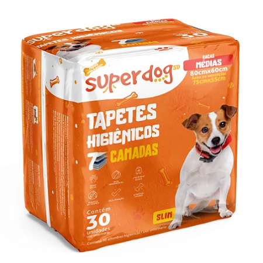

Tapete Higiênico

Tapete higiênico superabsorvente com camada antivazamento e superfície de secagem rápida, ideal para treinamento de filhotes e uso por pets idosos.
- Camadas: núcleo superabsorvente + barreira antivazamento
- Tamanho: 60 x 45 cm
- Descartável e com ingredientes biodegradáveis
- Indicado para cães e gatos
Preço: R$ 139,90 (pct c/ 30 unidades)